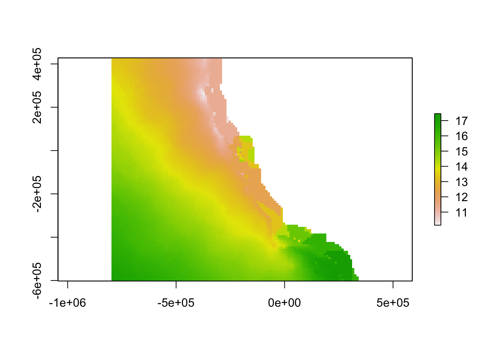
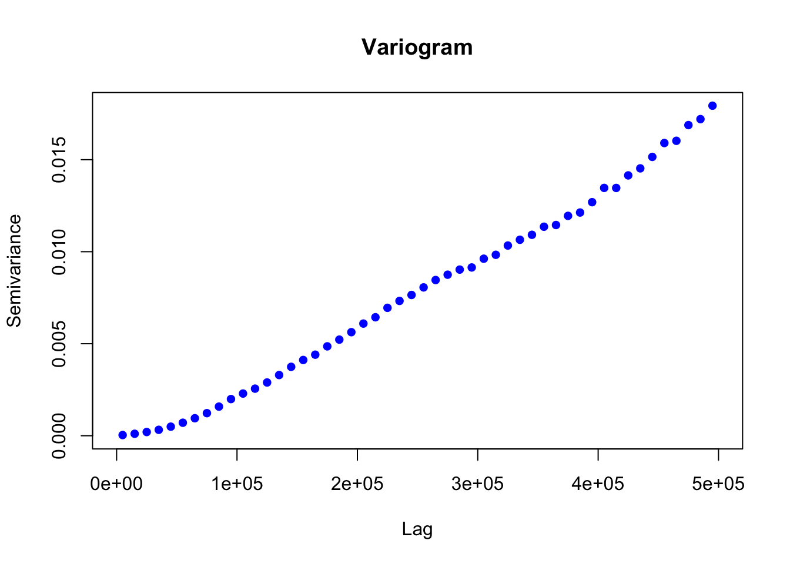

Manuscript Gap Analysis
Introduction
Given the existing monitoring network, our analysis locates the best site for the next monitoring asset, thereby filling in monitoring network gaps one asset at a time, based off the sites that already are in place. In this analysis we utilized methods that fall in the middle of the spectrum defined by other works in this realm (see Asch et al. (2003) for a more simplistic approach, and Frolov et al. 2013 for a more involved approach). These decisions were made due to the constraints of the data we used (spatial metadata as opposed to time series and satellite data) as well as the goal of working with policymakers and non-scientist end users. The result is an analysis that provides specific spatial information on relative sampling of ocean acidification on the West Coast. Monitoring networks are geographic objects, and it might seem that the ideal network would evenly spaced across the ocean. However, the ocean is not uniform: some places in the ocean are more dynamic, both spatially and temporally, than others. This effect can be illustrated with an example from the Santa Barbara Channel (see LTER analysis). Thus, where the ocean is highly dynamic, an ideal monitoring network will have more closely clustered assets than in places that are more static.
Step 1. Manipulate sea surface temperature and dissolved oxygen estimate make aragonite saturation state
Setup
Load packages, set cache, define study area
if (!require(pacman)) install.packages("pacman")## Loading required package: pacmanlibrary(pacman)
p_load(
tidyverse, here, glue,
raster,
sdmpredictors, dismo,
deldir,
mapview,
tmap,
ggplot2,
rgdal,
gstat,
usdm,
knitr,
tmap,
rnaturalearth,
grid,
gridExtra)
# custom R package: oatools
devtools::load_all(here("../oatools")) # for developing## Loading oatools## Warning in setup_ns_exports(path, export_all, export_imports): Objects
## listed as exports, but not present in namespace: find_gaps#library(oatools) # devtools::install_github("resilinseas/oatools") # for eventual production
# paths & variables ----
dir_data <- here("data")
dir_sdmdata_old <- here("data/sdmpredictors")
dir_cache <- here("cache")
dir_sdmdata <- here("cache/sdmpredictors")
SST_tif <- here("data/sst_mean.tif")
DO_tif <- here("data/do_mean.tif")
# reorganize dirs so "cache" is always local and ignored by git, vs all in "data" tracked by git & pushed to github
if (!dir.exists(dir_data)) dir.create(dir_data)
if (!dir.exists(dir_cache)) dir.create(dir_cache)
if (!dir.exists(dir_sdmdata) & dir.exists(dir_sdmdata_old))
file.rename(dir_sdmdata_old, dir_sdmdata)
if (!dir.exists(dir_sdmdata)) dir.create(dir_sdmdata)
list<- list_layers("Bio-ORACLE")
# extent of NE Pacific study area, for cropping rasters
ext_study <- extent(-600000, 340000, -590000, 1210000)
crs_study <- '+init=EPSG:6414'
# extent of larger area for voronoi polygons
ext_study_vor <- extent(-800000, 340000, -800000, 1300000)
ext_study_alin <- extent(-6000000, 340000, -600000, 430000)
ext_study_juranek <- extent(-6000000, 340000, -900000, 1210000)
# import shapefiles for cropping to coast
poly_coast<- readOGR(dsn=path.expand("/Users/raetaylor-burns/Desktop/RTB/gapanalysismanuscript/Export_Output_2"), layer="Export_Output_2")## OGR data source with driver: ESRI Shapefile
## Source: "/Users/raetaylor-burns/Desktop/RTB/gapanalysismanuscript/Export_Output_2", layer: "Export_Output_2"
## with 52 features
## It has 55 fields
## Integer64 fields read as strings: OBJECTID POPULATION POP2010 WHITE BLACK AMERI_ES ASIAN HAWN_PI HISPANIC OTHER MULT_RACE MALES FEMALES AGE_UNDER5 AGE_5_9 AGE_10_14 AGE_15_19 AGE_20_24 AGE_25_34 AGE_35_44 AGE_45_54 AGE_55_64 AGE_65_74 AGE_75_84 AGE_85_UP HOUSEHOLDS HSEHLD_1_M HSEHLD_1_F MARHH_CHD MARHH_NO_C MHH_CHILD FHH_CHILD FAMILIES HSE_UNITS VACANT OWNER_OCC RENTER_OCCCanada<- readOGR(dsn=path.expand("/Users/raetaylor-burns/Desktop/RTB/gapanalysismanuscript/Canada"), layer="Canada")## OGR data source with driver: ESRI Shapefile
## Source: "/Users/raetaylor-burns/Desktop/RTB/gapanalysismanuscript/Canada", layer: "Canada"
## with 13 features
## It has 2 fieldsstates<- readOGR(dsn=path.expand("/Users/raetaylor-burns/Desktop/RTB/gapanalysismanuscript/cb_2016_us_state_20m"), layer="cb_2016_us_state_20m")## OGR data source with driver: ESRI Shapefile
## Source: "/Users/raetaylor-burns/Desktop/RTB/gapanalysismanuscript/cb_2016_us_state_20m", layer: "cb_2016_us_state_20m"
## with 52 features
## It has 9 fields
## Integer64 fields read as strings: ALAND AWATERestuaries<- readOGR(dsn=path.expand("/Users/raetaylor-burns/Desktop/RTB/gapanalysismanuscript/estuaries"), layer="estuaries")## OGR data source with driver: ESRI Shapefile
## Source: "/Users/raetaylor-burns/Desktop/RTB/gapanalysismanuscript/estuaries", layer: "estuaries"
## with 931 features
## It has 1 fieldssf_puget<- readOGR(dsn=path.expand("/Users/raetaylor-burns/Desktop/RTB/gapanalysismanuscript/water_bodies_carto"), layer="water_bodies_carto")## OGR data source with driver: ESRI Shapefile
## Source: "/Users/raetaylor-burns/Desktop/RTB/gapanalysismanuscript/water_bodies_carto", layer: "water_bodies_carto"
## with 1918 features
## It has 1 fields#load shapefiles
poly_coast <- spTransform(poly_coast, crs(crs_study))
Canada <- spTransform(Canada, crs(crs_study))
states <- spTransform(states, crs(crs_study))
estuaries <- spTransform(estuaries, crs(crs_study))
sf_puget <- spTransform(sf_puget, crs(crs_study))
# commenting out unused exploratory commands
# list_datasets() %>% View()
# list_layers()
# list_layers("Bio-ORACLE") %>% View()
# list_layers("MARSPEC") %>% View()
# list_layers("WorldClim") %>% View()
# list<- list_layers("Bio-ORACLE")
# sea surface temperature
# devtools::load_all(here("../oatools")) # for use while developing
r_sst <- lyr_to_tif(
lyr = "BO_sstmean",
tif = here("data/sst_mean.tif"),
crs = crs_study,
dir_sdm_cache = dir_sdmdata,
extent_crop = ext_study_vor,
redo=T, fill_na=TRUE, fill_window=11)## lyr_to_tif() messages...## loading layer from sdmpredictors and projecting## Warning in rgdal::rawTransform(projto_int, projfrom, nrow(xy), xy[, 1], :
## 1834961 projected point(s) not finite## cropping raster to extent## filling in missing (NA) values with focal window## writing raster to tif# r_sst_alin <- crop(r_sst, ext_study)-0.7
# r_sst_juranek <- crop(r_sst, ext_study)-0.7
r_sst_alin <- crop(r_sst, ext_study_alin) - 0.7
r_sst_juranek <- crop(r_sst, ext_study_juranek) - 0.7
n_na <- sum(is.na(raster::getValues(r_sst)))
plot(r_sst)
#BO_sstmean
#BO_dissoxCreate SST/DO rasters from bio-oracle data
Aragonite saturation state is the gold standard in an ocean acidification monitoring network, as this measurement has direct biological implications.9 However, the variables needed to calculate aragonite saturation state are not yet measured at a sufficient spatial-temporal resolution to identify highly variable locations across the study region. While this raw data could theoretically be replaced by a high-resolution model that would explicitly account for physical, chemical, and biological oceanographic processes, and integrate a variety of input data, such models are not yet available (although some are under development). In the absence of a model or data to describe aragonite saturation state, we used temperature and dissolved oxygen as proxies, because they are strongly positively correlated with aragonite saturation state.
# from observations, units in ml/l
r_do <- lyr_to_tif(
lyr = "BO_dissox",
tif = here("data/do_mean.tif"),
crs = crs_study,
dir_sdm_cache = dir_sdmdata,
extent_crop = ext_study_vor,
redo=T, fill_na=TRUE, fill_window=11)## lyr_to_tif() messages...## loading layer from sdmpredictors and projecting## Warning in rgdal::rawTransform(projto_int, projfrom, nrow(xy), xy[, 1], :
## 1834961 projected point(s) not finite## cropping raster to extent## filling in missing (NA) values with focal window## writing raster to tif#units to micromol/kg
r_do <- r_do*(1000/(0.022391*1027))
r_do_alin <- crop(r_do, ext_study_alin)
r_do_juranek <- crop(r_do, ext_study_juranek)
plot(r_sst_alin)
Use Juranek 2009 and Alin 2012 model to create ocean acidification layer for the study region
At a sub-regional scale, empirically validated models have been developed that predict aragonite saturation state based on temperature and dissolved oxygen measurements. Our analysis utilized equation II from Alin et al. (2012) in the southern part of the study region and equation 3 from Juranek et al. (2009) in the northern part of the study region. We then created a “worst-case scenario” aragonite saturation state raster using the minimum sea surface temperature and dissolved oxygen values from each ocean area.
#juranek aragonite
j0 = 9.242*10^-1
j1 = 4.492*10^-3
j2 = 9.40 * 10^-4
jo2r = 140
jtr = 8
juranek_arag <- j0 + j1 * (r_do_juranek-jo2r) + j2 * (r_do_juranek-jo2r) * (r_sst_juranek-jtr)
#alin aragonite
a0 = 1.112
a1 = 9.59*10^-2
a2 = 3.54*10^-3
a3 = 5.91*10^-4
ao2r = 138.46
atr = 10.28
alin_arag <- a0 + a1 * (r_sst_alin-atr) + a2 * (r_do_alin-ao2r) + a3 * (r_sst_alin-atr) * (r_do_alin-ao2r)Combine model outputs
To reduce the effect of the abrupt change in aragonite saturation state at the boundary between the two models, the mean of the two model outputs was used to predict aragonite saturation state in waters between Eureka and Fort Bragg, a distance of about 100 miles.
# 2 arag models, mean in between
arag <- mosaic(alin_arag, juranek_arag, fun = mean)
midhigh <- extent(-6000000, 340000, 260000, 1210000)
midhigh <- crop(juranek_arag, midhigh)
midlow <- extent(-6000000, 340000, -600000, 110000)
midlow <- crop(alin_arag, midlow)
arag <- mosaic(arag, midhigh, fun = mean)
arag <- mosaic(arag, midlow, fun = mean)
arag <- crop(arag, ext_study)
arag_clipped <- mask(arag, poly_coast, inverse = TRUE) #Clip continuous raster
arag_clipped <- mask(arag_clipped, estuaries, inverse = TRUE) #Clip continuous raster
arag_clipped <- mask(arag_clipped, sf_puget, inverse = TRUE) #Clip continuous raster
plot(arag_clipped)
Create variogram
To quantify the relationship between changing aragonite saturation state and distance, the aragonite saturation state raster was used to create a semivariogram. The semi-variogram describes how the semi-variance of a parameter increases with distance, revealing information on the spatial scale of decorrelation of that parameter. In this analysis, we used it to determine the relationship between variance in aragonite saturation state and distance. The semi-variogram revealed that the semi-variance in aragonite saturation state saturates (i.e. semi-variance ceases to increase as distance increases) at a distance of 2000 km, and a maximum semi-variance of 0.12 is reached at that point. We used a linear interpolation between the origin and the saturation point to relate variance in aragonite saturation state and distance.
aragvar <- Variogram(arag_clipped, cutoff = 500000)
plot(aragvar)
Step 2. Relate aragonite saturation state trends to each monitoring site
Load inventory
This step can be done locally when updated versions of the monitoring inventory are available
# import inventory
inventory <- read_csv(here("data/inventory.csv"))Tidy Inventory
- Isolate OAH Focus Data Collection
- Quantify Data Collection Frequency (measurements/year)
- Remove NA coordinate entries from gliders
- Transform latitude and longitude to numeric
- Create subsets of data
Make spatial points object from inventory coordinates and its subsets
# isolate coordinate columns
coords <- cbind.data.frame(oahfocus$Longitude, oahfocus$Latitude)
carbcompletecoords <- cbind.data.frame(carbcomplete$Longitude, carbcomplete$Latitude)
incompletecoords <- cbind.data.frame(incomplete$Longitude, incomplete$Latitude)
highfrequencycoords <- cbind.data.frame(highfrequency$Longitude, highfrequency$Latitude)
lowfrequencycoords <- cbind.data.frame(lowfrequency$Longitude, lowfrequency$Latitude)
highfreqcarbcompletecoords <- cbind.data.frame(highfreqcarbcomplete$Longitude, highfreqcarbcomplete$Latitude)
calcoficoords <- cbind.data.frame(calcofi$Longitude, calcofi$Latitude)
# remove duplicate locations
deduped.coords<-unique(coords)
deduped.carbcomplete <- unique(carbcompletecoords)
deduped.incomplete <- unique(incompletecoords)
deduped.highfrequency <- unique(highfrequencycoords)
deduped.lowfrequency <- unique(lowfrequencycoords)
deduped.highfreqcarbcomplete <- unique(highfreqcarbcompletecoords)
# create spatial points objects
inventorycoords <- SpatialPoints(deduped.coords, CRS("+proj=longlat +ellps=WGS84"))
inventorycoords <- spTransform(inventorycoords, CRS('+init=EPSG:6414'))
carbcompletecoords <- SpatialPoints(deduped.carbcomplete, CRS("+proj=longlat +ellps=WGS84"))
carbcompletecoords <- spTransform(carbcompletecoords, CRS('+init=EPSG:6414'))
highfreqcoords <- SpatialPoints(deduped.highfrequency, CRS("+proj=longlat +ellps=WGS84"))
highfreqcoords <- spTransform(highfreqcoords, CRS('+init=EPSG:6414'))
calcoficoords <- SpatialPoints(calcoficoords, CRS("+proj=longlat +ellps=WGS84"))
calcoficoords <- spTransform(calcoficoords, CRS('+init=EPSG:6414'))
lowfreqcoords <- SpatialPoints(deduped.lowfrequency, CRS("+proj=longlat +ellps=WGS84"))
lowfreqcoords <- spTransform(lowfreqcoords, CRS('+init=EPSG:6414'))
highfreqcarbcompletecoords <- SpatialPoints(deduped.highfreqcarbcomplete, CRS("+proj=longlat +ellps=WGS84"))
highfreqcarbcompletecoords <- spTransform(highfreqcarbcompletecoords, CRS('+init=EPSG:6414'))
incompletecoords <- SpatialPoints(deduped.incomplete, CRS("+proj=longlat +ellps=WGS84"))
incompletecoords <- spTransform(incompletecoords, CRS('+init=EPSG:6414'))
calcofiarag <- raster::extract(arag, calcoficoords, method='simple', df=TRUE)
meancalcofi <- mean(calcofiarag$layer, na.rm= TRUE)
relerr <- (meancalcofi-2.2425)/2.2425
# account for uncertainty
arag_max <- arag*(1+relerr)
arag_min <- arag*(1-relerr)Create voronoi polygons and rasterize the results
We used Voronoi polygons to divide the ocean into regions based on spatial proximity to each monitoring asset.23 We assigned a polygon identification number to each polygon and then gridded the Voronoi polygons, while maintaining the polygon identification numbers.
# create voronoi polygons
vor <-voronoi(inventorycoords)
carbcompletevor <- voronoi(carbcompletecoords)
incompletevor <- voronoi(incompletecoords)
highfreqvor <- voronoi(highfreqcoords)
lowfreqvor <- voronoi(lowfreqcoords)
# rasterize polygons
vorraster<- rasterize(vor, r_sst, "id")
carbcompletevorraster<- rasterize(carbcompletevor, r_sst, "id")
incompletevorraster<- rasterize(incompletevor, r_sst, "id")
highfreqvorraster<- rasterize(highfreqvor, r_sst, "id")
lowfreqvorraster<- rasterize(lowfreqvor, r_sst, "id")Create OA layer
We assigned the parameter value of all locations with the same polygon identification number (i.e. nearest to the same monitoring asset) to the measured value of the cell containing the monitoring asset associated with that same polygon identification number. This step resulted in a map of aragonite saturation state across the West Coast estimated by the empirical model output at each monitoring site. Thus, a monitoring network with 20 assets would result in a map made up of 20 chunks of area, each with different values of aragonite saturation state based on the estimated value at the nearest monitoring asset.
#extract aragonite saturation state value for each monitoring site
sitearag_max<- raster::extract(arag_max, inventorycoords, method='simple', df=TRUE)
carbcompletesitearag_max<- raster::extract(arag_max, carbcompletecoords, method='simple', df=TRUE)
highfreqsitearag_max<- raster::extract(arag_max, highfreqcoords, method='simple', df=TRUE)
# rename column names of sitesstrange
colnames(sitearag_max)<-c("id", "Arag")
colnames(carbcompletesitearag_max)<-c("id", "Arag")
colnames(highfreqsitearag_max)<-c("id", "Arag")
# substitute polygon id for monitoring site sea surface temerature of that polygon
polygonarag_max<-subs(vorraster, sitearag_max, by="id", which="Arag", subsWithNA=FALSE)
carbcompletepolygonarag_max <- subs(carbcompletevorraster, carbcompletesitearag_max, by="id", which="Arag", subsWithNA=FALSE)
highfreqpolygonarag_max <- subs(highfreqvorraster, highfreqsitearag_max, by="id", which="Arag", subsWithNA=FALSE)
sitearag_min<- raster::extract(arag_min, inventorycoords, method='simple', df=TRUE)
carbcompletesitearag_min<- raster::extract(arag_min, carbcompletecoords, method='simple', df=TRUE)
highfreqsitearag_min<- raster::extract(arag_min, highfreqcoords, method='simple', df=TRUE)
# rename column names of sitesstrange
colnames(sitearag_min)<-c("id", "Arag")
colnames(carbcompletesitearag_min)<-c("id", "Arag")
colnames(highfreqsitearag_min)<-c("id", "Arag")
# substitute polygon id for monitoring site sea surface temerature of that polygon
polygonarag_min<-subs(vorraster, sitearag_min, by="id", which="Arag", subsWithNA=FALSE)
carbcompletepolygonarag_min <- subs(carbcompletevorraster, carbcompletesitearag_min, by="id", which="Arag", subsWithNA=FALSE)
highfreqpolygonarag_min <- subs(highfreqvorraster, highfreqsitearag_min, by="id", which="Arag", subsWithNA=FALSE)Determine semivariance of aragonite discrepancy
We then used the empirical model outputs created using the continuous environmental layers to find the difference between the empirical model outputs at every location in the ocean and the empirical model outputs for the nearest monitoring asset. The result is an aragonite saturation state discrepancy value that describes how different acidification conditions are at any point on the West Coast as compared to these conditions at the nearest data collection location. In places where this value is high, a monitoring asset is not describing OA conditions well. In places where this value is low, a monitoring asset describes OA conditions very well. In the future, when aragonite saturation state models are available on a regional scale, outputs from such models could replace our empirical model outputs.
#vij = (xi-xj)^2/2
discrepancy_1 = (arag_min)-(polygonarag_max)## Warning in (arag_min) - (polygonarag_max): Raster objects have different
## extents. Result for their intersection is returneddiscrepancy_1[discrepancy_1 < 0] = 0
discrepancy_2 =(arag_max)-(polygonarag_min)## Warning in (arag_max) - (polygonarag_min): Raster objects have different
## extents. Result for their intersection is returneddiscrepancy_2[discrepancy_2 < 0] = 0
discrepancy = mosaic(discrepancy_1, discrepancy_2, fun = min)
ccdiscrepancy_1 = (arag_min)-(carbcompletepolygonarag_max)## Warning in (arag_min) - (carbcompletepolygonarag_max): Raster objects have
## different extents. Result for their intersection is returnedccdiscrepancy_1[ccdiscrepancy_1 < 0] = 0
ccdiscrepancy_2 = (arag_max)-(carbcompletepolygonarag_min)## Warning in (arag_max) - (carbcompletepolygonarag_min): Raster objects have
## different extents. Result for their intersection is returnedccdiscrepancy_2[ccdiscrepancy_2 < 0] = 0
ccdiscrepancy = mosaic(ccdiscrepancy_1, ccdiscrepancy_2, fun = min)
hfdiscrepancy_1 = (arag_min)-(highfreqpolygonarag_max)## Warning in (arag_min) - (highfreqpolygonarag_max): Raster objects have
## different extents. Result for their intersection is returnedhfdiscrepancy_1[hfdiscrepancy_1 < 0] = 0
hfdiscrepancy_2 = (arag_max)-(highfreqpolygonarag_min)## Warning in (arag_max) - (highfreqpolygonarag_min): Raster objects have
## different extents. Result for their intersection is returnedhfdiscrepancy_2[hfdiscrepancy_2 < 0] = 0
hfdiscrepancy = mosaic(hfdiscrepancy_1, hfdiscrepancy_2, fun = min)
discrepancy <- mask(discrepancy, poly_coast, inverse = TRUE) #Clip continuous raster
discrepancy <- mask(discrepancy, estuaries, inverse = TRUE) #Clip continuous raster
discrepancy <- mask(discrepancy, sf_puget, inverse = TRUE) #Clip continuous raster
ccdiscrepancy <- mask(ccdiscrepancy, poly_coast, inverse = TRUE) #Clip continuous raster
ccdiscrepancy <- mask(ccdiscrepancy, estuaries, inverse = TRUE) #Clip continuous raster
ccdiscrepancy <- mask(ccdiscrepancy, sf_puget, inverse = TRUE) #Clip continuous raster
hfdiscrepancy <- mask(hfdiscrepancy, poly_coast, inverse = TRUE) #Clip continuous raster
hfdiscrepancy <- mask(hfdiscrepancy, estuaries, inverse = TRUE) #Clip continuous raster
hfdiscrepancy <- mask(hfdiscrepancy, sf_puget, inverse = TRUE) #Clip continuous raster
plot(discrepancy)plot(ccdiscrepancy)plot(hfdiscrepancy)vij<- (discrepancy)^2/2
carbcompletevij <- (ccdiscrepancy)^2/2
highfreqvij <- (hfdiscrepancy)^2/2Step 3. Geographic and oceanographic distance
Oceanographic distance
The inverse of the linear relationship from the semi-variogram was applied to the semi-variance calculated above, yielding a map showing the “oceanographic distance” between each cell in our study region and the nearest monitoring asset. We define oceanographic distance as the effective distance between any location and the nearest monitoring asset, based on the similarity of oceanographic conditions that determine OA conditions between the two locations. A cell with high oceanographic distance has different acidification conditions than the nearest monitoring asset, and a cell with low oceanographic distance has similar acidification conditions to the nearest monitoring asset.
#variogram does not saturate: develop an equation to describe relationship using square root function...
model <- lm(aragvar@variogram[["gamma"]] ~ 0 + I((aragvar@variogram[["distance"]])))
summary(model)
summary(model)
xbar<-aragvar@variogram[["distance"]]
ybar<-(xbar)*model$coefficients[1]
ggplot()+
geom_point(aes(aragvar@variogram[["distance"]], aragvar@variogram[["gamma"]]), color = "red")+
geom_point(aes(xbar, ybar), color = "blue")+
theme_bw()+
ggtitle('Variogram (red) and predictive model (blue)')+
xlab('Distance Between Points (m)')+
ylab('Semivariance of Aragonite Discrepancy')+
theme(text = element_text(size = 10, family="serif"))
oceanographicdistance = (vij/(4.303e-08 ))/(1000)
carbcompleteoceanographicdistance = (carbcompletevij/(4.303e-08 ))/(1000)
highfreqoceanographicdistance = (highfreqvij/(4.303e-08))/(1000)
plot(oceanographicdistance)
plot(carbcompleteoceanographicdistance)
plot(highfreqoceanographicdistance)
od_clipped <- mask(oceanographicdistance, poly_coast, inverse = TRUE) #Clip continuous raster
od_clipped <- mask(od_clipped, estuaries, inverse = TRUE) #Clip continuous raster
od_clipped <- mask(od_clipped, sf_puget, inverse = TRUE) #Clip continuous raster
plot(od_clipped)
Geographic distance
Determine geographic distance from the nearest monitoring point
distance<-distanceFromPoints(oceanographicdistance, inventorycoords)/1000
distance_clipped <- mask(distance, poly_coast, inverse = TRUE) #Clip continuous raster
distance_clipped <- mask(distance_clipped, estuaries, inverse = TRUE) #Clip continuous raster
distance_clipped <- mask(distance_clipped, sf_puget, inverse = TRUE) #Clip continuous raster
plot(distance_clipped)
carbcompletedistance<-distanceFromPoints(carbcompleteoceanographicdistance, carbcompletecoords)/1000
carbcompletedistance_clipped <- mask(carbcompletedistance, poly_coast, inverse = TRUE) #Clip continuous raster
carbcompletedistance_clipped <- mask(carbcompletedistance_clipped, estuaries, inverse = TRUE) #Clip continuous raster
carbcompletedistance_clipped <- mask(carbcompletedistance_clipped, sf_puget, inverse = TRUE) #Clip continuous raster
plot(carbcompletedistance_clipped)
highfreqdistance<-distanceFromPoints(highfreqoceanographicdistance, highfreqcoords)/1000
highfreqdistance_clipped <- mask(highfreqdistance, poly_coast, inverse = TRUE) #Clip continuous raster
highfreqdistance_clipped <- mask(highfreqdistance_clipped, estuaries, inverse = TRUE) #Clip continuous raster
highfreqdistance_clipped <- mask(highfreqdistance_clipped, sf_puget, inverse = TRUE) #Clip continuous raster
plot(highfreqdistance_clipped)
Step 4. Find Gaps
Combine ingredients
We used a Euclidean distance approach to combine geographic distance and oceanographic distance into a single “gap” layer. Thus, a gap in the network is a place where oceanographic conditions are different from conditions at the nearest data collection location, a place that is geographically far from the nearest data collection, or a place with both of these characteristics. When combining these two, we weighted the oceanographic distance term by multiplying it by the unitless ratio of the maximum value of geographic distance and the maximum value of the oceanographic distance.
#calculate gaps
weight = maxValue(od_clipped)/maxValue(distance_clipped)
gap<-(sqrt((weight*distance_clipped)^2+(oceanographicdistance)^2))
carbcompletegap<-(sqrt((weight*carbcompletedistance_clipped)^2+(carbcompleteoceanographicdistance)^2))
carbcompletegap<-(sqrt((carbcompletedistance_clipped)^2+(carbcompleteoceanographicdistance)^2))
highfreqgap<-(sqrt((weight*highfreqdistance_clipped)^2+(highfreqoceanographicdistance)^2))
gap <- crop(gap, ext_study)
carbcompletegap <- crop(carbcompletegap, ext_study)
highfreqgap <- crop(highfreqgap, ext_study)
plot(gap)
plot(carbcompletegap)
plot(highfreqgap)
Map Gaps